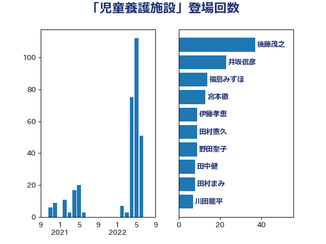

単語「児童養護施設」

| 後藤茂之 | 自由民主党 | 37 回 |
| 井坂信彦 | 立憲民主党 | 23 回 |
| 福島みずほ | 社会民主党 | 14 回 |
| 宮本徹 | 日本共産党 | 13 回 |
| 伊藤孝恵 | 国民民主党 | 9 回 |
| 田村憲久 | 自由民主党 | 9 回 |
| 野田聖子 | 自由民主党 | 9 回 |
| 田中健 | 国民民主党 | 8 回 |
| 田村まみ | 国民民主党 | 8 回 |
| 川田龍平 | 立憲民主党 | 7 回 |
| 國重徹 | 公明党 | 6 回 |
| 吉田統彦 | 立憲民主党 | 4 回 |
| 打越さく良 | 立憲民主党 | 4 回 |
| 芳賀道也 | 国民民主党 | 4 回 |
| 山本香苗 | 公明党 | 3 回 |
| 山添拓 | 日本共産党 | 3 回 |
| 川崎ひでと | 自由民主党 | 3 回 |
| 緒方林太郎 | 無所属 | 3 回 |
| 一谷勇一郎 | 日本維新の会 | 2 回 |
| 柚木道義 | 立憲民主党 | 2 回 |
| 柴田巧 | 日本維新の会 | 2 回 |
| 梅村みずほ | 日本維新の会 | 2 回 |
| 橋本岳 | 自由民主党 | 2 回 |
| 高良鉄美 | 無所属 | 2 回 |
| 佐藤英道 | 公明党 | 1 回 |
| 吉田はるみ | 立憲民主党 | 1 回 |
| 堤かなめ | 立憲民主党 | 1 回 |
| 大石あきこ | れいわ新選組 | 1 回 |
| 山井和則 | 立憲民主党 | 1 回 |
| 山本左近 | 自由民主党 | 1 回 |
| 岡本あき子 | 立憲民主党 | 1 回 |
| 岩渕友 | 日本共産党 | 1 回 |
| 岸田文雄 | 自由民主党 | 1 回 |
| 島村大 | 自由民主党 | 1 回 |
| 河野義博 | 公明党 | 1 回 |
| 田名部匡代 | 立憲民主党 | 1 回 |
| 田島麻衣子 | 立憲民主党 | 1 回 |
| 田村智子 | 日本共産党 | 1 回 |
| 鈴木英敬 | 自由民主党 | 1 回 |
| 音喜多駿 | 日本維新の会 | 1 回 |